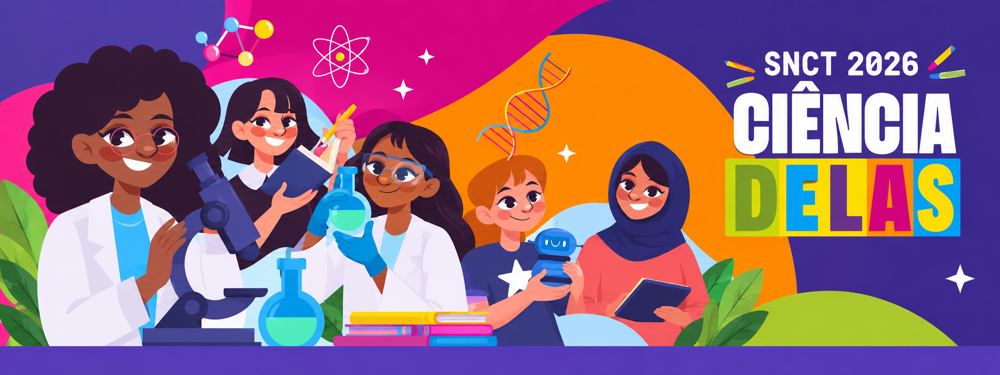

Da prancheta ao dado em tempo real
Sistema Integrado de Avaliação dos Eventos Municipais de Promissão/SP
Livia Gomes • Lucas Altino
Extensão Universitária • IFSP
Diretoria de Turismo
Promissão e seus grandes eventos
Perfil do público
Público diverso e pouco habituado a formulários online: apenas divulgar um link não gera respostas.
Como a avaliação é feita hoje
2 a 5 mil pessoas no recinto
Servidor aborda o público
Fichas levadas ao setor
Transcrição em planilha
Dias depois do evento
Um ecossistema, uma identidade: o CPF
Só o CPF e toques na tela. Inclui quem não tem, ou não quer usar, o celular.
Agenda de eventos, notícias, avaliação com pergunta aberta e Passaporte de pontos.
Substitui papel e caneta. Entrevistas rápidas presenciais pelos servidores com sincronização ágil.
Verifique se a pasta libs/ está junto do arquivo.
Totem Físico de Autoatendimento
Apenas o CPF no teclado touch. Sem login complexo ou senhas.
1 pergunta objetiva por etapa com botões gigantes e alto contraste.
Limpa os dados da tela e reinicia sozinho para o próximo da fila.
Sistema operacional blindado e CPF mascarado na visualização pública.
Jornada do munícipe no totem (menos de 20 segundos)
Painel da Prefeitura em Tempo Real
Avaliações recebidas
Satisfação média
Moradores × Visitantes
Pontos distribuídos
Distribuição das notas (todas as perguntas)
Média por categoria
Últimas avaliações recebidas
Abra o terminal (tecla T) ou escaneie no celular/outro PC (tecla Q) e envie uma resposta.
Aplicativo do Cidadão & Passaporte Gamificado
Programação completa dos palcos, horários, localização com mapas e alertas oficiais da Prefeitura.
Além das notas objetivas, o cidadão pode enviar sugestões descritivas e elogios em texto livre.
A cada avaliação (no totem ou app), o CPF acumula pontos para níveis: Bronze, Prata, Ouro e Embaixador de Promissão.
Avaliou no totem antes de instalar o app? Ao criar a conta pelo CPF, os pontos já estarão no extrato.
Festa do Peão 2026
Arena Principal • Shows às 22h
Avalie o show e a praça de alimentação e ganhe +50 pts!
Substituição do Papel: App do Servidor
Coleta Ágil Assistida
O servidor aborda famílias e idosos no recinto, insere o CPF e seleciona as opções em segundos diretamente no smartphone corporativo.
Resiliência Offline-First
Quedas de 4G/Wi-Fi não travam a pesquisa: todas as avaliações são salvas localmente em SQLite/IndexedDB e sincronizam automaticamente ao restaurar conexão.
Produtividade & Auditoria
Métricas transparentes por operador (quantidade de pesquisas, horários de pico, geolocalização do ponto de coleta) prevenindo fraudes e duplicidades.
Arquitetura Técnica & Conformidade LGPD
Kiosk / Web / Mobile
HTML5 + Three.js PBR nos totens, React/React Native para portabilidade e layouts de alto contraste para acessibilidade universal.
API RESTful & WebSocket
Processamento assíncrono de eventos com filas, endpoints de telemetria em tempo real e comunicação bidirecional segura.
Banco Unificado por CPF
PostgreSQL estruturado com tabelas de eventos, formulários, respostas e extratos de pontos integrados em chave criptográfica.
Conformidade com LGPD
Anonimização de dados pessoais, CPF mascarado em relatórios analíticos públicos e comunicação 100% criptografada com TLS 1.3.
Garantias Não Funcionais
-
Tempo de Resposta < 200ms
Confirmação instantânea de voto para evitar filas no totem de autoatendimento.
-
99,8% de Disponibilidade Operacional
Redundância de dados local para continuidade ininterrupta durante os 4 dias de evento.
-
Acessibilidade WCAG 2.1 AA
Contrastes nítidos e zonas de toque mínimas de 48x48px para idosos e munícipes com baixa visão.
Impacto Municipal & Retorno para Promissão
Decisões com Evidências
A Diretoria de Turismo passa a negociar contratos de shows, segurança e banheiros com base na nota real dada pelos visitantes.
Voz ao Cidadão Comum
Inclusão direta de pessoas idosas, munícipes rurais e famílias que não têm hábito de responder formulários complexos online.
Custo Zero de Papel
Eliminação de impressões de centenas de questionários, pranchetas e semanas de trabalho administrativo com digitação manual.
Extensão Tecnológica Real
Conexão direta da sala de aula com uma demanda real de uma cidade paulista, entregando software funcional e impacto social mensurável.
Obrigado.
Estamos abertos a perguntas, sugestões e considerações da banca.
Próximas Etapas Acadêmicas
Mapeamento das necessidades da população, dos servidores e da Secretaria de Turismo.
Modelo visual do quiosque em 3D e teste prático com simulação de votos em tempo real.
Desenho detalhado de como o cidadão, o entrevistador e a gestão navegam e interagem no sistema.
Primeiro teste prático durante uma festividade oficial com a Prefeitura de Promissão.